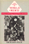
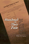

Browse
other Author lists:
A B C
D E F
G H I
J K L
M N O
P Q R
S T U
V W X
Y Z |
|
Normative
Politics and the Community of Nations
Fain,
Haskell
272 pp • Spring 1987
cloth 978-0-87722-476-1 |
 |
The War on Slums in the Southwest
Public Housing and Slum Clearance in Texas, Arizona, and New Mexico, 1935-1965
Fairbanks, Robert B.
252 pp • 6x9 • Spring 2014
paper 978-1-4399-1116-7
cloth 978-1-4399-1115-0 |
 |
Medicalized
Masculinities
edited
by Rosenfeld, Dana and Christopher A. Faircloth 272
pp • 6x9 • Fall 2005
paper 978-1-59213-098-6
cloth 978-1-59213-097-9
|

|
The Public and Its Possibilities
Triumphs and Tragedies in the American City
Fairfield, John D.
368 pp • 6x9 • Spring 2010
paper 978-1-4399-0211-0
cloth 978-1-4399-0210-3
|
|  |
The
Promise of World Order
Essays in Normative International Relations
Falk,
Richard
336 pp • Fall 1987
cloth 978-0-87722-517-1 |
 |
Explorations
on the Edge of Time
The Prospects for World Order
Falk,
Richard
256 pp • Fall 1991
paper 978-1-56639-080-4
cloth 978-0-87722-860-8 |
 |
Heidegger
and Nazism
Farías,
Victor, edited by Joseph Margolis and Tom Rockmore
368 pp • 6x9 • Fall 1989
paper 978-0-87722-830-1
cloth 978-0-87722-640-6
|

|
Long Distance Love
A Passion for Football
Farred, Grant
224 pp • 5.5x8.25 • Fall 2007
paper 978-1-59213-374-1
cloth 978-1-59213-373-4
|
 |
Crime and Family
Selected Essays of Joan McCord
McCord, Joan, introduction by David Farrington, foreword by Geoffrey Sayre-McCord
320 pp • 6x9 • Fall 2006
paper 978-1-59213-558-5
cloth 978-1-59213-557-8
|
 |
The
Memory Bird
Survivors of Sexual Abuse
edited
by Malone, Caroline, Linda Farthing and Lorraine Marce
295 pp • 5.5x8.25 • Spring 1997
paper 978-1-56639-526-7
cloth 978-1-56639-525-0
|
 |
Rethinking
Rental Housing
Gilderbloom,
John I. and Richard P. Appelbaum, foreword by Joe R. Feagin
296 pp • Fall 1987
paper 978-0-87722-538-6
cloth 978-0-87722-498-3 |
 |
Houston
Growth and Decline in a Sunbelt Boomtown
Shelton,
Beth Anne, Joe R. Feagin, Robert Bullard, Nestor Rodriguez and
Robert D. Thomas
219 pp • Spring 1989
cloth 978-0-87722-607-9 |
 |
The
Baltimore Book
New Views of Local History
edited
by Fee, Elizabeth, Linda Shopes and Linda Zeidman
256 pp • Fall 1991
paper 978-1-56639-184-9
cloth 978-0-87722-817-2 |
 |
Knowledge
and Values in Social and Educational Research
edited
by Bredo, Eric and Walter Feinberg
paper 978-0-87722-245-3
cloth 978-0-87722-242-2
|

|
Communities and Crime
An Enduring American Challenge
Wilcox, Pamela, Francis T. Cullen, and Ben Feldmeyer
282 pp • 6x9 • Fall 2017
paper 978-1-59213-974-3
cloth 978-1-59213-973-6
|
 |
Gardens
of Philadelphia and the Delaware Valley
Klein,
Jr., William M., photographs by Derek Fell
320 pp • 8x10 • Spring 1995
cloth 978-1-56639-313-3 |
|
The
Politics of Women's Health
Exploring Agency and Autonomy
Sherwin,
Susan and the Feminist Healthcare Network
321 pp • 6x9 • Spring 1998
paper 978-1-56639-633-2
cloth 978-1-56639-632-5
|
 |
Chinese Connections
Critical Perspectives on Film, Identity, and Diaspora
edited by Tan, See-Kam, Peter X. Feng and Gina Marchetti 320 pp • 6x9 • Fall 2008
paper 978-1-59213-268-3
cloth 978-1-59213-267-6
|
 |
Individual
Voices, Collective Visions
Fifty Years of Women in Sociology
edited
by Goetting, Ann and Sarah Fenstermaker
376 pp • 6x9 • Fall 1994
paper 978-1-56639-251-8
cloth 978-1-56639-250-1 |
 |
The
Feminist Case Against Bureaucracy
Ferguson,
Kathy E.
304 pp • Fall 1984
paper 978-0-87722-400-6
cloth 978-0-87722-357-3 |
|  |
Abandoned
to Their Fate
Social Policy and Practice Toward Severely Retarded People in
America, 1820-1920
Ferguson,
Philip M.
232 pp • 5.5x8.25 • Spring 1994
cloth 978-1-56639-154-2 |
 |
A
New Housing Policy for America
Recapturing the American Dream
Schwartz,
David C., Richard C. Ferlauto and Daniel N. Hoffman, foreword
by Bill Bradley
288 pp • Spring 1988
paper 978-0-87722-568-3
cloth 978-0-87722-567-6 |
|
Governing
the Ungovernable City
Political Skill, Leadership, and the Modern Mayor
Ferman,
Barbara
304 pp • Spring 1985
cloth 978-0-87722-376-4 |
 |
Feminist
Organizations
Harvest of the New Women's Movement
edited
by Ferree, Myra Marx and Patricia Yancey Martin
488 pp • 6x9 • Fall 1994
paper 978-1-56639-229-7
cloth 978-1-56639-228-0
|
 |
We
the People
Young,
Alfred F. and Terry J. Fife with Mary E. Janzen
265 pp • 10x8 • Fall 1992
paper 978-0-87722-938-4
cloth 978-0-87722-937-7 |
|
The Steelers Encyclopedia
Finder, Chuck
336 pp • 8.375x10.875 • Fall 2012
cloth 978-1-4399-0832-7
|
 |
Women
with Disabilities
Essays in Psychology, Culture, and Politics
edited
by Fine, Michelle and Adrienne Asch
347 pp • 6x9 • Fall 1987
paper 978-0-87722-669-7
cloth 978-0-87722-474-7
|
 |
The
Story of Reo Joe
Work, Kin, and Community in Autotown, U.S.A.
Fine,
Lisa M.
256 pp • 6x9 • Spring 2004
paper 978-1-59213-258-4
cloth 978-1-59213-257-7
|
 |
The
Souls of the Skyscraper
Female Clerical Workers in Chicago, 1870-1930
Fine,
Lisa M.
264 pp • Spring 1990
cloth 978-0-87722-674-1 |
 |
Society
and Legal Change
Watson,
Alan, foreword by Paul Finkelman
168 pp • 5.5x8.25 • Fall 2001
paper 978-1-56639-920-3
cloth 978-1-56639-919-7
|
 |
The
Fashioned Self
Finkelstein,
Joanne
212 pp • Spring 1991
cloth 978-0-87722-850-9 |
 |
Work
on the Waterfront
Worker Power and Technological Change in a West Coast Port
Finlay,
William
224 pp • 5.5x8.25 • Spring 1988
cloth 978-0-87722-523-2 |
|
Critical
Studies in Organization and Bureaucracy
edited
by Fischer, Frank and Carmen Sirianni
704 pp • 6x9 • Fall 1993
paper 978-1-56639-122-1
cloth 978-1-56639-121-4
|
 |
Art
for The Masses
A Radical Magazine and Its Graphics, 1911-1917
Zurier,
Rebecca, introduction by Leslie Fishbein
240 pp • 9.25x12 • Fall 1987
paper 978-0-87722-670-3
cloth 978-0-87722-513-3 |
 |
Fighting
Back in Appalachia
Traditions of Resistance and Change
edited
by Fisher, Stephen L.
400 pp • 6x9 • Fall 1992
paper 978-0-87722-977-3
cloth 978-0-87722-976-6 |
 |
The
Roots of Community Organizing, 1917-1939
Betten,
Neil and Michael J. Austin, contributions by Robert Fisher,
William E. Hershey, Raymond A. Hohl and Marc Lee Raphael
230 pp • 5.5x8.25 • Fall 1989
cloth 978-0-87722-662-8
|
|
Perceiving
Artworks
Fisher,
John
Fall 1980
cloth 978-0-87722-164-7 |
 |
Growing
Up with Television
Everyday Learning Among Young Adolescents
Fisherkeller,
JoEllen
224 pp • 6x9 • Spring 2002
paper 978-1-56639-953-1
cloth 978-1-56639-952-4
|
 |
East
End 1888
Life in a London Burough Among the Laboring Poor
Fishman,
William J.
352 pp • Spring 1988
cloth 978-0-87722-572-0 |
 |
Beyond
the Barricades
The Sixties Generation Grows Up
Whalen,
Jack and Richard Flacks
324 pp • Spring 1989
paper 978-0-87722-707-6
cloth 978-0-87722-606-2 |
 |
Cultural
Politics and Social Movements
edited
by Darnovsky, Marcy, Barbara Epstein and Richard Flacks
384 pp • 6x9 • Fall 1995
paper 978-1-56639-323-2
cloth 978-1-56639-322-5
|

|
The Textures of Time
Agency and Temporal Experience
Flaherty, Michael G.
192 pp • 6x9 • Fall 2010
paper 978-1-4399-0263-9
cloth 978-1-4399-0262-2
|
|
Women's
Political Voice
How Women are Transforming the Practice and Study of Politics
Flammang,
Janet A.
480 pp • 6x9 • Spring 1997
paper 978-1-56639-534-2
cloth 978-1-56639-533-5
|
|
Reimagining Courts
A Design for the Twenty-First Century
Flango, Victor E. and Thomas M. Clarke
New in Paperback!
230 pp • 5.5x8.25 • Spring 2017
paper 978-1-4399-1168-6
cloth 978-1-43991-167-9 |

|
The Disability Rights Movement
From Charity to Confrontation
Updated Edition
Fleischer, Doris Zames and Frieda Zames
360 pp • 7x10 • Fall 2011
paper 978-1-4399-0744-3
cloth 978-1-4399-0743-6
|
 |
Resurrecting Slavery
Racial Legacies and White Supremacy in France
Fleming, Crystal Marie
292 pp • 6x9 • Fall 2016
paper 978-1-4399-1409-0
cloth 978-1-4399-1408-3 |
 |
Resisting Work
The Corporatization of Life and Its Discontents
Fleming, Peter
210 pp • 5.5x8.25 • Spring 2014
paper 978-1-4399-1113-6
cloth 978-1-4399-1112-9 |
 |
The
White Sox Encyclopedia
Lindberg,
Richard C., photographs by Mark Fletcher
592 pp • 9x12 • Spring 1997
cloth 978-1-56639-449-9 |
 |
Justice
and School Systems
The Role of the Courts in Education Litigation
edited
by Flicker, Barbara
456 pp • Spring 1990
cloth 978-0-87722-675-8 |
 |
Critique
of Applied Ethics
Reflections and Recommendations
Edel,
Abraham, Elizabeth Flower and Finbarr W. O'Connor
288 pp • 6x9 • Spring 1994
paper 978-1-56639-158-0
cloth 978-1-56639-157-3 |
 |
Morality,
Philosophy, and Practice
Historical and Contemporary Readings and Studies
edited
by Edel, Abraham, Elizabeth Flower and Finbarr W. O'Connor
620 pp • Fall 1988
cloth 978-0-87722-591-1 |

|
She's Got a Gun
Floyd, Nancy
256 pp • 7x10 • Fall 2007
paper 978-1-59213-155-6
cloth 978-1-59213-154-9
|
 |
Confronting
the Margaret Mead Legacy
Scholarship, Empire, and the South Pacific
edited
by Foerstel, Lenora and Angela Gilliam
309 pp • Fall 1991
paper 978-1-56639-261-7
cloth 978-0-87722-886-8 |
 |
Political
Parties and Elections in the United States
Marti,
Jose, edited by Philip S. Foner, translated by Elinor Randall
208 pp • Fall 1988
cloth 978-0-87722-604-8 |
 |
American History Now
Edited for the American Historical Association by Eric Foner and Lisa McGirr
440 pp • 6x9 • Spring 2011
paper 978-1-4399-0244-8
cloth 978-1-4399-0243-1
|
|
The
New American History
edited
by Foner, Eric
400 pp • 6x9 • Spring 1997
paper 978-1-56639-552-6
cloth 978-1-56639-551-9
|
|
American
Communism and Black Americans
A Documentary History, 1930-1934, Volume 2
Foner,
Philip S. and Herbert Shapiro
416 pp • Fall 1990
cloth 978-0-87722-761-8 |
|
Proceedings
of the Black State Conventions, 1865-1900
Volume I
edited
by Foner, Philip S. and George E. Walker
Spring 1980
cloth 978-0-87722-149-4 |
|
Proceedings
of the Black State Conventions, 1840-1865
Volume II
edited
by Foner, Philip S. and George E. Walker
405 pp • Fall 1985
cloth 978-0-87722-145-6 |
 |
Black
Workers
A Documentary History from Colonial Times to the Present
edited
by Foner, Philip S. and Ronald L. Lewis
400 pp • Fall 1988
paper 978-0-87722-554-6
cloth 978-0-87722-592-8 |
|
Trade
Union Gospel
Christianity and Labor in Industrial Philadelphia, 1865-1915
Fones-Wolf,
Ken
260 pp • Fall 1989
cloth 978-0-87722-652-9 |
 |
The
First Suburban Chinatown
The Remaking of Monterey Park, California
Fong,
Timothy P.
240 pp • 6x9 • Fall 1993
paper 978-1-56639-262-4
cloth 978-1-56639-123-8
|
 |
Making
Equity Planning Work
Leadership in the Public Sector
Krumholz,
Norman and John Forester, foreword by Alan A. Altshuler
271 pp • 6x9 • Spring 1990
paper 978-0-87722-701-4
cloth 978-0-87722-700-7 |
 |
Rebuilding Community after Katrina
Transformative Education in the New Orleans Planning Initiative
edited by Reardon, Ken and John Forester
296 pp • 6x9 • Fall 2015
paper 978-1-4399-1100-6
cloth 978-1-4399-1099-3 |
 |
Sex and the Founding Fathers
The American Quest for a Relatable Past
Foster, Thomas A.
New in Paperback!
232 pp • 6x9 • Fall 2016
paper 978-1-4399-1103-7
cloth 978-1-4399-1102-0 |

|
To The City
Urban Photographs of the New Deal
Foulkes, Julia L.
142 pp • 6x9 • Fall 2010
paper 978-1-59213-998-9
cloth 978-1-59213-997-2
|
|
Toxic
Work
Women Workers at GTE Lenkurt
Fox,
Steve
192 pp • Fall 1991
paper 978-0-87722-895-0
cloth 978-0-87722-816-5 |

|
Mandates, Parties, and Voters
Fowler, James H. and Oleg Smirnov
216 pp • 6x9 • Spring 2007
paper 978-1-59213-595-0
cloth 978-1-59213-594-3
|
 |
Deep
Vegetarianism
Fox,
Michael Allen
234 pp • 5.5x8.25 • Spring 1999
paper 978-1-56639-705-6
cloth 978-1-56639-704-9
|

|
Latino Lives in America
Making It Home
Fraga, Luis R., John A. Garcia, Rodney E. Hero, Michael Jones-Correa, Valerie Martinez-Ebers, and Gary Segura
224 pp • 5.5x8.25 • Spring 2010
paper 978-1-43990-049-9
cloth 978-1-43990-048-2
|

|
Multiethnic
Moments
The Politics of Urban Education Reform
Fraga, Luis, Susan E. Clarke, Rodney E. Hero, Mara S. Sidney
and Bari Anhalt Erlichson, foreword by Clarence N. Stone
264 pp • 6x9 • Fall 2006
paper 978-1-59213-537-0
cloth 1978-1-59213-536-3
|
 |
Animals,
Property, and the Law
Francione,
Gary L., foreword by William M. Kunstler, Esq.
368 pp • 6x9 • Spring 1995
paper 978-1-56639-284-6
cloth 978-1-56639-283-9
|
 |
Rain
Without Thunder
The Ideology of the Animal Rights Movement
Francione,
Gary L.
288 pp • 6x9 • Fall 1996
paper 978-1-56639-461-1
cloth 978-1-56639-460-4
|
 |
Introduction
to Animal Rights
Your Child or the Dog?
Francione,
Gary L., foreword by Alan Watson
272 pp • 6x9 • Fall 2000
paper 978-1-56639-692-9
cloth 978-1-56639-691-2
|

|
The
American Diary of a Japanese Girl
An Annotated Edition
edited by Franey, Laura E. and Edward Marx, by Yone Noguchi
224 pp • 6x9 • Fall 2006
paper 978-1-59213-555-4
cloth 978-1-59213-554-7
|

|
Out in the Union
A Labor History of Queer America
Frank, Miriam
240 pp • 6x9 • Spring 2014
paper 978-1-4399-1140-2
cloth 978-1-4399-1139-6
|

|
Campaign Advertising and American Democracy
Franz, Michael M., Paul B. Freedman, Kenneth M. Goldstein and Travis N. Ridout
216 pp • 6x9 • Fall 2007
paper 978-1-59213-456-4
cloth 978-1-59213-455-7
|
 |
Choices and Changes
Interest Groups in the Electoral Process
Franz, Michael M.
240 pp • 5.5x8.25 • Spring 2008
paper 978-1-59213-674-2
cloth 978-1-59213-673-5
|

|
The Persuasive Power of Campaign Advertising
Ridout, Travis N. and Michael M. Franz
200 pp • 5.5x8.25 • Spring 2011
paper 978-1-4399-0333-9
cloth 978-1-4399-0332-2
|
|
Sisterhood
and Solidarity
Workers' Education for Women, 1914-1984
Frederickson,
Mary and Joyce L. Kornbluh
Fall 1984
cloth 978-0-87722-328-3 |
 |
Ethnographies of Youth and Temporality
Time Objectified
edited by Dalsgård, Anne Line, Martin Demant Frederiksen, Susanne Højlund and Lotte Meinert
Afterword by Michael Flaherty
206 pp • 6x9 • Fall 2013
cloth 978-1-4399-1066-5 |
 |
Young Men, Time, and Boredom in the Republic of Georgia
Frederiksen, Martin Demant
New in Paperback!
214 pp • 6x9 • Fall 2016
paper 978-1-4399-0919-5
cloth 978-1-4399-0918-8 |
 |
As French As Everyone Else?
A Survey of French Citizens of Maghrebin, African, and Turkish Origin
Sylvain Brouard and Vincent Tiberj
Foreword by Pascal Perrineau, Translated by Jennifer Fredette
160 pp • 5.5x8.25 • Spring 2011
paper 978-1-4399-0296-7
cloth 978-1-4399-0295-0
|
 |
Constructing Muslims in France
Discourse, Public Identity, and the Politics of Citizenship
Fredette, Jennifer
222 pp • 6x9 • Fall 2013
paper 978-1-4399-1029-0
cloth 978-1-4399-1028-3 |
 |
In
Transit
The Transport Workers Union in New York City, 1933-1966
Freeman,
Joshua B.
464 pp • 6x9 • Fall 2001
paper 978-1-56639-922-7
|
|
Campaign Advertising and American Democracy
Franz, Michael M., Paul B. Freedman, Kenneth M. Goldstein and Travis N. Ridout
216 pp • 6x9 • Fall 2007
paper 978-1-59213-456-4
cloth 978-1-59213-455-7
|
 |
Restructuring the Philadelphia Region
Metropolitan Divisions and Inequality
Adams, Carolyn, David W. Bartelt, David Elesh and Ira Goldstein with Michelle Schmitt and Joshua Freely
256 pp • 6x9 • Fall 2008
paper 978-1-59213-897-5
cloth 978-1-59213-896-8
|

|
Transient Images
Personal Media in Public Frameworks
Freedman, Eric
230 pp • 6x9 • Fall 2010
paper 978-1-4399-0327-8
cloth 978-1-4399-0326-1
|
 |
There
Goes the 'Hood
Views of Gentrification from the Ground Up
Freeman,
Lance
248 pp • 6x9 • Spring 2006
paper 978-1-59213-437-3
cloth 978-1-59213-436-6
|
 |
We
Make the Road by Walking
Conversations on Education and Social Change
Horton,
Myles and Paulo Freire, edited by Brenda Bell, John Gaventa
and John Peters
296 pp • 5.5x8.25 • Fall 1990
paper 978-0-87722-775-5
cloth 978-0-87722-771-7
|

|
Youth Violence
Sex and Race Differences in Offending, Victimization, and Gang Membership
Esbensen, Finn-Aage, Dana Peterson, Terrance J. Taylor and Adrienne Freng
244 pp • 6x9 • Fall 2010
paper 978-1-4399-0072-7
cloth 978-1-4399-0071-0
|
 |
Civilized
Body
Social Domination, Control, and Health
Freund,
Peter E. S.
166 pp • Fall 1982
cloth 978-0-87722-285-9 |
 |
Organizing
Asian American Labor
The Pacific Coast Canned-Salmon Industry, 1870-1942
Friday,
Chris
296 pp • 6x9 • Spring 1994
paper 978-1-56639-398-0
cloth 978-1-56639-139-9 |
 |
The
Skeptical Visionary
A Seymour Sarason Education Reader
edited
by Fried, Robert L., Seymour Sarason
312 pp • 7x10 • Fall 2002
paper 978-1-56639-980-7
cloth 978-1-56639-979-1
|
|
Taking
Time
Parental Leave Policy and Corporate Culture
Fried,
Mindy
256 pp • 5.5x8.25 • Fall 1998
paper 978-1-56639-647-9
cloth 978-1-56639-646-2
|
 |
Over
There
The Story of America's First Great Overseas Crusade
Friedel,
Frank, foreword by Edward M. Coffman
270 pp • Spring 1990
cloth 978-0-87722-718-2 |
 |
A is for Art Museum
Friedland, Katy and Marla K. Shoemaker
64 pp • 8.25x8.25 • Fall 2008
cloth 978-1-59213-963-7 |
 |
Art Museum Opposites
Friedland, Katy and Marla K. Shoemaker
44 pp • 8.5x11 • Fall 2010
cloth 978-1-4399-0523-4
|
 |
Feminism
and Community
edited
by Weiss, Penny A. and Marilyn Friedman
432 pp • 6x9 • Spring 1995
paper 978-1-56639-277-8
cloth 978-1-56639-276-1 |
 |
Commentary
in American Life
edited
by Friedman, Murray
232 pp • 6x9 • Spring 2005
paper 978-1-59213-106-8
cloth 978-1-59213-105-1
|
 |
Philadelphia
Jewish Life, 1940-2000
edited
by Friedman, Murray, afterword by Dan Rottenberg
328 pp • 8.375x10.875 • Fall 2002
cloth 978-1-56639-999-9
|
|
The
Urban Idea in Colonial America
Fries,
Sylvia Doughty
208 pp • Spring 1978
cloth 978-0-87722-103-6 |
|
Aging
and the Law
An Interdisciplinary Reader
edited
by Frolik, Lawrence A.
690 pp • 7x10 • Fall 1998
paper 978-1-56639-653-0
cloth 978-1-56639-652-3
|
 |
Choosing
Equality
The Case for Democratic Schooling
Bastian,
Ann, Norm Fruchter, Marilyn Gittell, Kenneth Haskins and Colin
Greer, foreword by James P. Comer
222 pp • 5.5x8.25 • Fall 1986
paper 978-0-87722-454-9
cloth 978-0-87722-438-9 |
 |
Between
Race and Empire
African-Americans and Cubans before the Cuban Revolution
edited
by Brock, Lisa and Digna Casteñada Fuertes, foreword by Manning
Marable
289 pp • 6x9 • Spring 1998
paper 978-1-56639-587-8
cloth 978-1-56639-586-1
|
 |
Japenese
Cities in the World Economy
edited
by Fujita, Kuniko and Richard Child Hill
360 pp • 6x9 • Spring 1993
cloth 978-1-56639-034-7
|
 |
Free
Women
Ethics and Aesthetics in Twentieth-Century Women's Fiction
Fullbrook,
Kate
192 pp • Fall 1990
paper 978-0-87722-774-8
cloth 978-0-87722-773-1 |
 |
Going Global
Culture, Gender, and Authority in the Japanese Subsidiary of an American Corporation
Fuller, Ellen V.
232 pp • 5.25x8.25 • Fall 2008
paper 978-1-59213-689-6
cloth 978-1-59213-688-9
|
 |
Work
and Democracy in Socialist Cuba
Fuller,
Linda O.
311 pp • 6x9 • Spring 1992
cloth 978-0-87722-893-6 |
 |
The Great Refusal
Herbert Marcuse and Contemporary Social Movements
edited by Lamas, Andrew T., Todd Wolfson, and Peter N. Funke, with a foreword by Angela Y. Davis
440 pp • 6x9 • Fall 2016
paper 978-1-4399-1304-8
cloth 978-1-4399-1303-1 |
 |
The NFL
Critical and Cultural Perspectives
edited by Oates, Thomas P. and Zack Furness
Foreword by Michael Oriard
256 pp • 6x9 • Spring 2014
paper 978-1-4399-0958-4
cloth 978-1-4399-0957-7 |

|
One Less Car
Bicycling and the Politics of Automobility
Furness, Zack
360 pp • 6x9 • Spring 2010
paper 978-1-59213-613-1
cloth 978-1-59213-612-4
|
 |
Teen
Mothers and the Revolving Welfare Door
Harris,
Kathleen Mullan, foreword by Frank F. Furstenberg, Jr.
224 pp • 5.5x8.25 • Fall 1996
cloth 978-1-56639-499-4 |